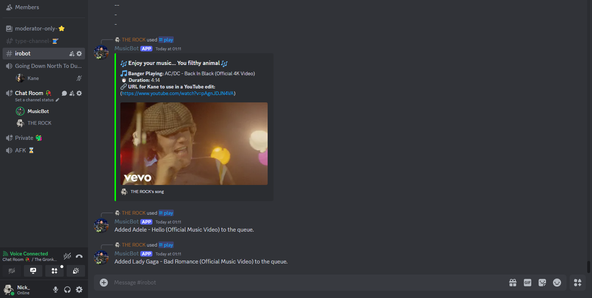

Discord Music Bot
This is a Discord music bot built in C# that allows users to play YouTube audio in voice channels. The bot features modern slash command integration, rich embed messages for now-playing information, and queue management. It uses Lavalink for high-quality audio streaming and includes detailed error handling with console logging
3
Technology Used
4
Key Features
Tech Used

Key Features
- Supports direct YouTube URLs and search queries for audio playback with high-quality audio streaming through Lavalink
- Detailed embed messages sent into the discord chat on each play request including the video thumbnail, duration, and track details
- Supports queue management allowing users to queue up multiple play requests to play one after the other
- Uses Discords relatively new slash command system for a better user experience